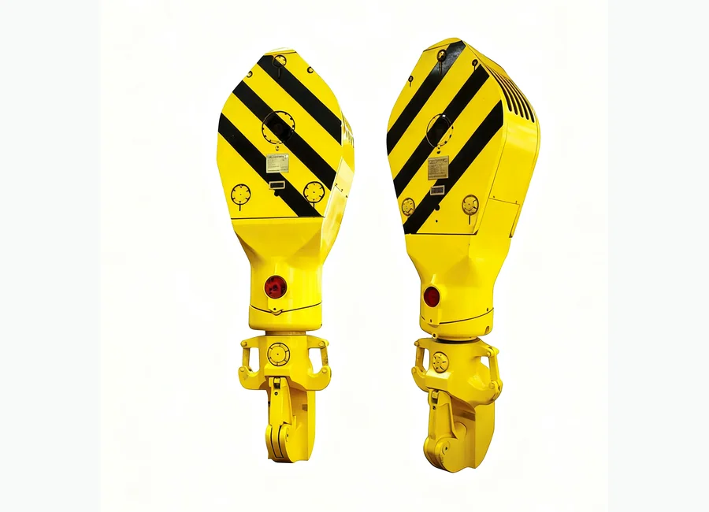

كيفية طلب عرض سعر
- أرسل رقم القطعة أو موديل المعدة.
- يمكنك إرفاق صورة المنتج أو الرسم الفني.
- سنراجع المطابقة ونجهز عرض السعر.
الحفارات وملحقات الونش
الحفارات وملحقات الونش. قطع غيار Drilling Equipment Traveling Block Hook لعمليات الصيانة والاستبدال في معدات حقول النفط. يمكن للمشترين إرسال رقم القطعة أو موديل المعدة أو صورة المنتج أو الرسم الفني للحصول على عرض سعر.

قطع غيار Drilling Equipment Traveling Block Hook لعمليات الصيانة والاستبدال في معدات حقول النفط. يمكن للمشترين إرسال رقم القطعة أو موديل المعدة أو صورة المنتج أو الرسم الفني للحصول على عرض سعر.
دعم مطابقة المواصفات وتغليف التصدير والتواصل عبر واتساب والبريد الإلكتروني لمشتري حقول النفط.
الوصف
الصور المخصصة للوصف تظهر هنا ولا تستخدم كصورة بطاقة المنتج الرئيسية.
لم يتم رفع صورة وصف لهذا المنتج حتى الآن.
المواصفات
إذا كان ملف المنتج الأصلي يحتوي على جدول موديلات أو مواصفات، فسيظهر هنا لدعم اختيار المنتج وطلب عرض السعر.
| الاسم | YC90 | YC135 | YC170 | YC225 | YC315 | YC450 | |||
|---|---|---|---|---|---|---|---|---|---|
| Носить | KN | 900 | 1350 | 1700 | 2250 | 3150 | 4500 | ||
| US ton | 100 | 150 | 200 | 250 | 350 | 500 | |||
| Внешний диаметр | mm | 762 | 915 | 915 | 1120 | 1270 | 1524 | ||
| in | 30 | 36 | 36 | 44 | 50 | 60 | |||
| Количество | 4 | 4 | 5 | 5 | 6 | 6 | |||
| Диаметр | mm | 26 | 26 | 29 | 32 | 35 | 38 | ||
| in | 1 | 1 | 1.125 | 1.25 | 1.375 | 1.5 | |||
| Размер | mm | 1500×806 ×533 | 1800×960 ×610 | 2100×960 ×630 | 2294×1190 ×630 | 2680×1350 ×974 | 3075×1600 ×800 | ||
| in | 59×32×21 | 71×38×24 | 83×38×25 | 90×47×25 | 105×53×38 | 121×63×32 | |||
| Качество | kg | 1810 | 2200 | 3010 | 3805 | 6842 | 8135 | ||
| Ib | 3990 | 4850 | 6636 | 8389 | 15084 | 17930 |
استفسار
للتسعير السريع، أرسل رقم القطعة أو موديل المضخة أو موديل الحفارة أو صورة المنتج أو الرسم الفني.